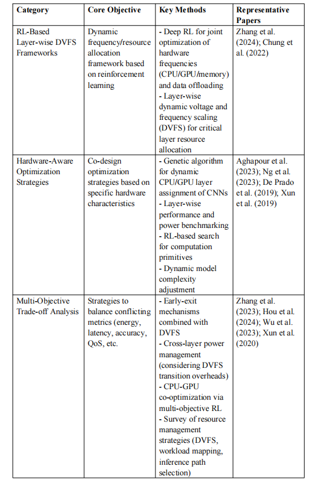

Literature Classification

Description: This chart illustrates the three main categories of literature:
- RL-Based Layer-wise DVFS Frameworks: Reinforcement Learning-based dynamic resource allocation frameworks for edge-cloud collaborative inference.
- Hardware-Aware Optimization Strategies: Co-design approaches integrating hardware characteristics (e.g., heterogeneous resource allocation, performance analysis).
- Multi-Objective Trade-off Analysis: Balancing energy consumption, latency, accuracy, and QoS in dynamic inference tasks.